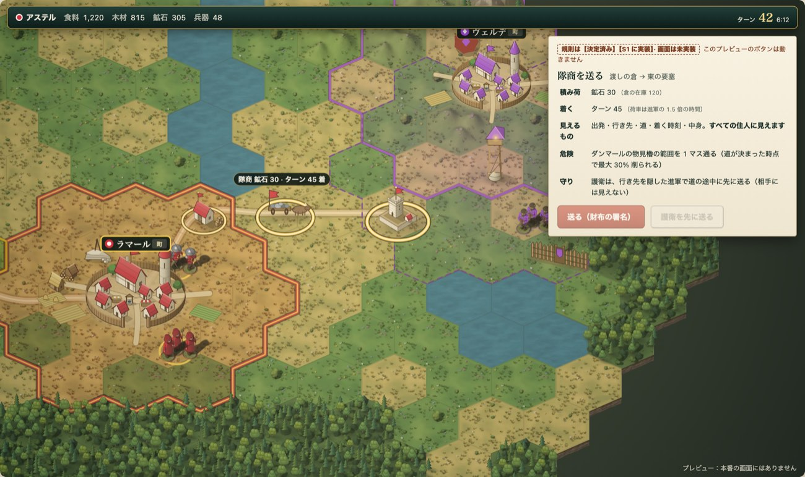

同じ場面を 3 つの方向で：あなたの村ハルデン、北の貯蔵庫からの隊商、戦争中のダンマールの柵と物見櫓、通行の国エンバー、見えていない東側
1 は今のクライアントの実画面（docs/design/uplift/shots、別の場面）。2 と 3 は同じ架空データをこの場で描いています。比べるのは配色ではなく、何をどの形で表すか、です。白黒・色覚の切り替えで、色に頼っていないかを確かめられます。
1 卓上の箱庭（いまの方向・uplift の決定）

彩色した地形と、家並み・人形・荷車の絵。暮らしが見える。国は境の色の帯と印。
2 記録の地図（推奨）
紙と墨。地形は模様＋淡い色、国は色＋印の形、状態は輪の線種＋記号＋カードの文。名前は自分のもの・選んだもの・知らせのあるものだけ。
3 盤の駒
平らな色面と丸い駒。色の差で速く読めるが、白黒・色覚の切り替えで状態が消える。
| 観点 | 1 卓上の箱庭 | 2 記録の地図（推奨） | 3 盤の駒 |
|---|---|---|---|
| 建物の見分け | 家並み・塔・柵の絵。遠目には村の annex と施設の絵が競う | 一筆の線の記号（村は屋根の数で規模、倉・物見櫓・柵・要塞・軍勢が別の形）。16px でも形で分かる | 駒の上の白い記号。駒の色が強く、記号は二番手 |
| 地形 | 焼き込みのタイルと絵（山・森）。見た目は豊か、歩く遅さは読めない | 模様＋淡い色（森は木の記号、丘はけば、山は線画、水は波）。凡例に「遅い」「通れない」 | 色だけ |
| 国の所属 | 境の帯と印 | 色＋形の印（6 種）を必ず併記。自分は二重の輪 | 駒の色だけ |
| 状態 | 金の輪（自分）。戦争と通行の見分け方は今回は確かめていない（未確認） | 戦争＝破線の輪、通行＝点線の輪、包囲＝交差の印、保護＝盾、知らせ＝!、見えていない＝斜線。カードが文で言う | 色の差だけ。白黒で消える |
| 情報の優先順位 | 絵と格子と札が同じ強さで競う（uplift でも課題） | ①知らせの帯 → ②選んだもののカード → ③地図。地図の名前は 3 種類だけ。道はターンの目盛り付き | 駒が最も強く、知らせが埋もれる |
| Realms との似かた | 高い、と見た目からは判断（彩色ヘックスの立体的な箱庭、建物と兵の絵）。試遊で確かめる | 低い。「記録・封・ターン」の WYLLS の芯を絵の言葉にする。ヘックス・村・生産・物流・軍事はそのまま | 中（一般的な盤ゲーム） |
| 作る量 | 既存 | 中。まずは既存のレンズ（国の色・軍事・地形）と並ぶ「記録の地図」レンズとして入れ、試遊で既定にするか決める。絵の資産は捨てない | 中 |
| 失うもの | — | 暮らしの絵の温度（レンズとして入れれば失わない） | 読みの正確さ（色に頼る） |
推奨は 2。ただし uplift の決定（1 を基本の見た目にする）を覆す提案ではありません。判断する場面（隊商・進軍の計画、不足の比較、留守の要約）で使う表示の規則として 2 を入れ、普段の見た目を 2 に替えるかは、人間の試遊（PLAYTEST.ja.md の問い V1〜V3）で決めます。